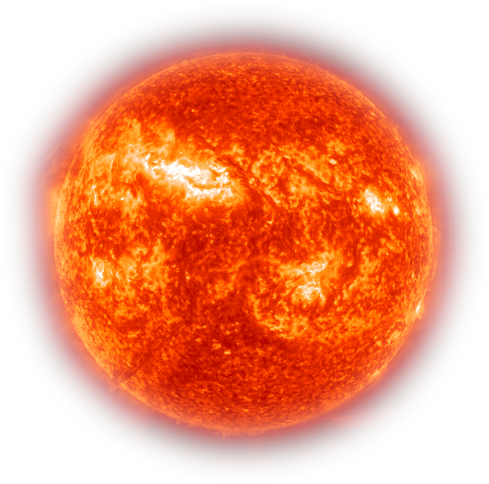
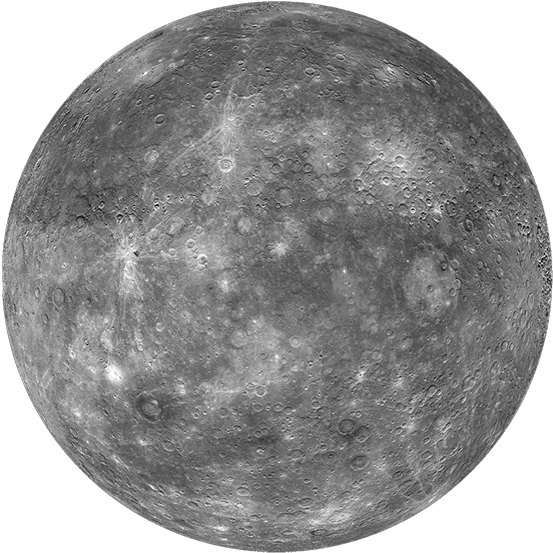
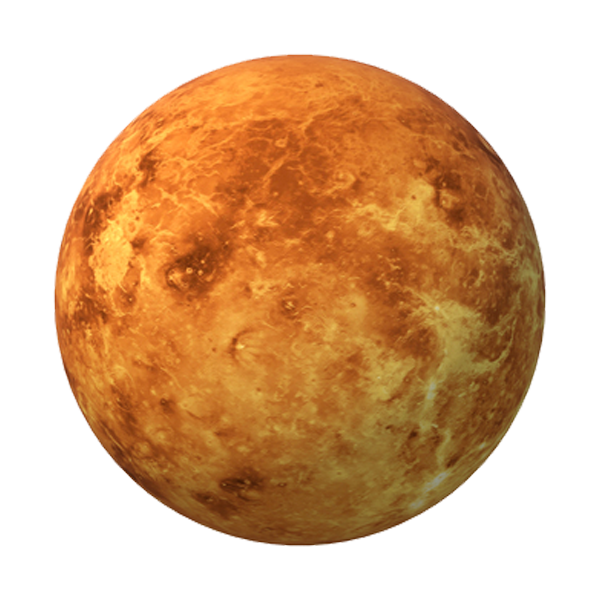
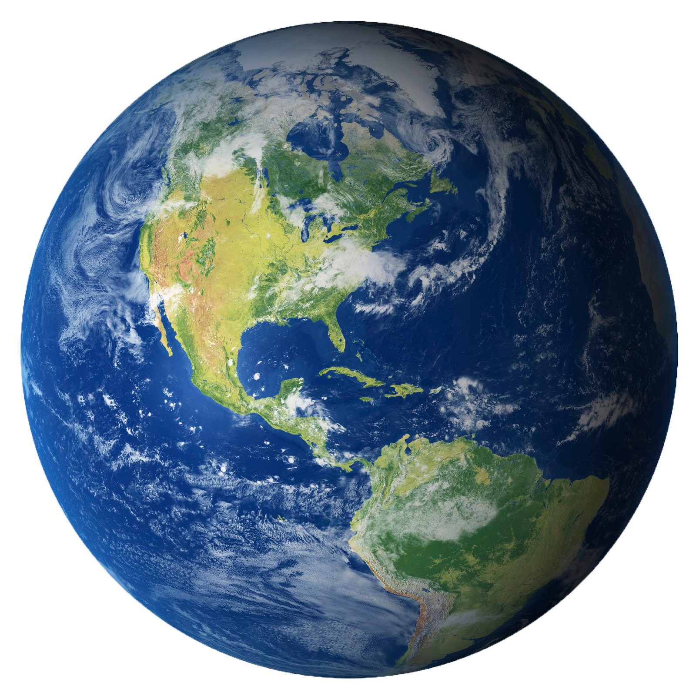
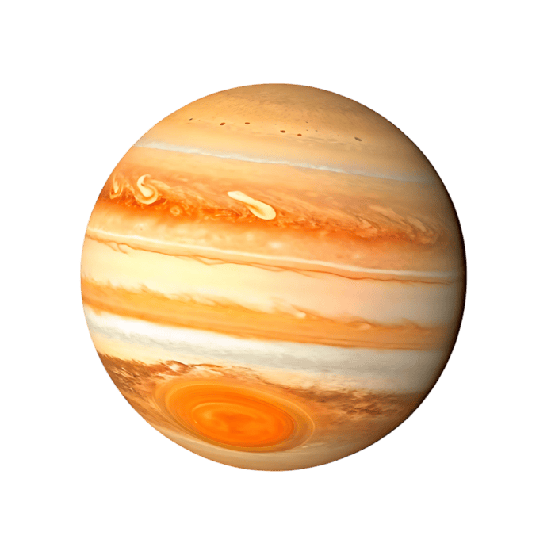
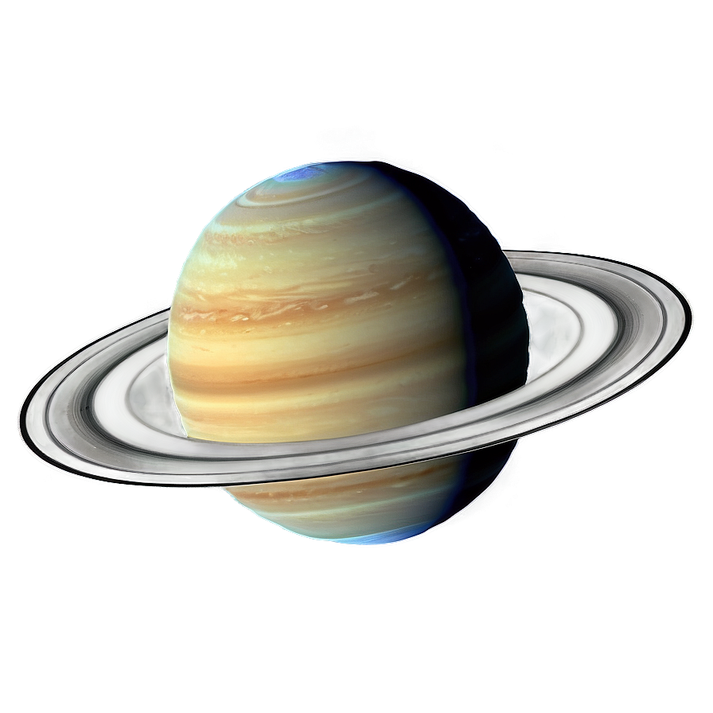
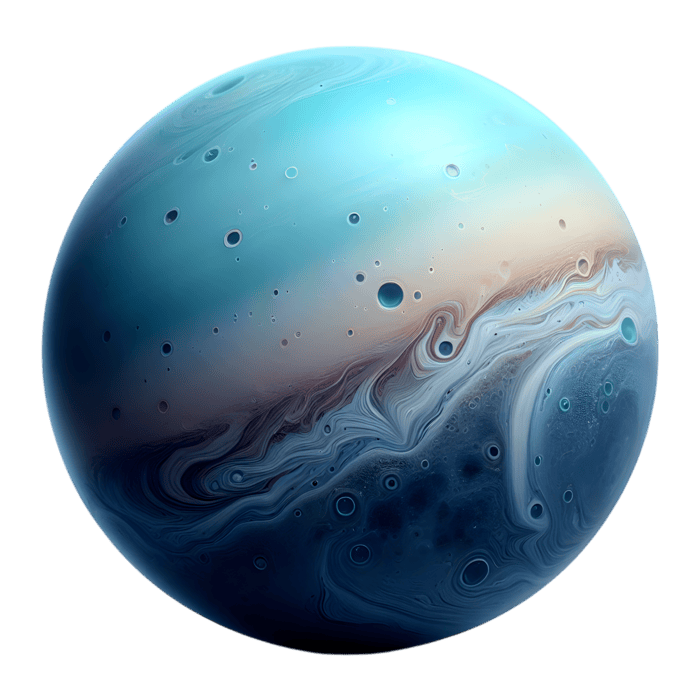
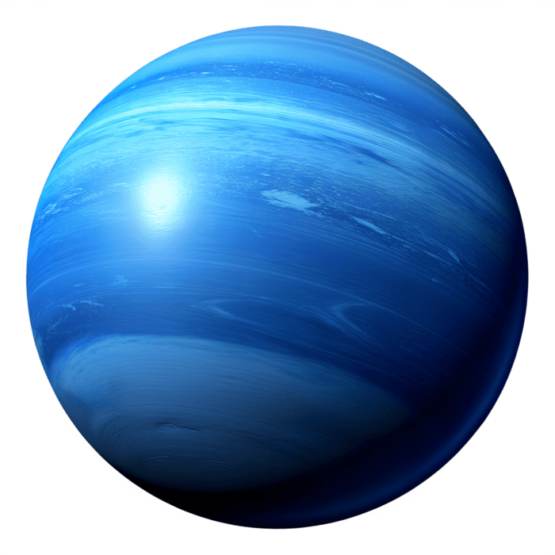

Sun
The Sun is the heart of our solar system, a massive ball of glowing gas that provides light and warmth to all the planets orbiting it. It provides energy for all life on Earth and is the source of all the heat and light we receive. The Sun's powerful gravity keeps the planets in their orbits, and its intense energy drives weather patterns, ocean currents, and the water cycle on Earth. Without the Sun, our planet would be a frozen, lifeless rock drifting through space.

Mercury
Mercury is a silvery liquid metal at room temperature, with the chemical symbol Hg and atomic number 80. Mercury is the closest planet to the Sun and the smallest planet in the solar system. It has no significant atmosphere and experiences extreme temperature variations, from nearly -173°C at night to 427°C during the day..

Venus
Venus is the second planet from the Sun and the hottest planet in our solar system. It is similar in size and structure to Earth, but has a thick, toxic atmosphere that traps heat and creates a runaway greenhouse effect.

Earth
Our home planet and the only known place with life. Earth is the third planet from the Sun. It has a diverse range of ecosystems, a protective atmosphere, and abundant water, making it a unique and vibrant world in our solar system.

Mars
Known as the Red Planet, Mars is the fourth planet from the Sun. It has a thin atmosphere, polar ice caps, and the largest volcano in the solar system, Olympus Mons. Mars has been a focus of exploration due to its potential for past or present microbial life.

Jupiter
Jupiter is the largest planet in our solar system and the fifth from the Sun. It is a gas giant with a thick atmosphere composed mainly of hydrogen and helium. Jupiter has a strong magnetic field, dozens of moons, and the famous Great Red Spot, a giant storm that has been raging for centuries.

Saturn
Saturn is the sixth planet from the Sun and is known for its stunning ring system, which is made up of ice and rock particles. It is a gas giant with a thick atmosphere and has over 80 moons, including Titan, which is larger than the planet Mercury.

Uranus
Uranus is the seventh planet from the Sun and is known for its unique blue-green color, which is due to methane in its atmosphere. It is an ice giant with a tilted axis, causing extreme seasons that last for decades.

Neptune
Neptune is the eighth and farthest planet from the Sun. It is an ice giant with a deep blue color, caused by methane in its atmosphere. Neptune has strong winds, storms, and 14 known moons, including Triton, which is geologically active.